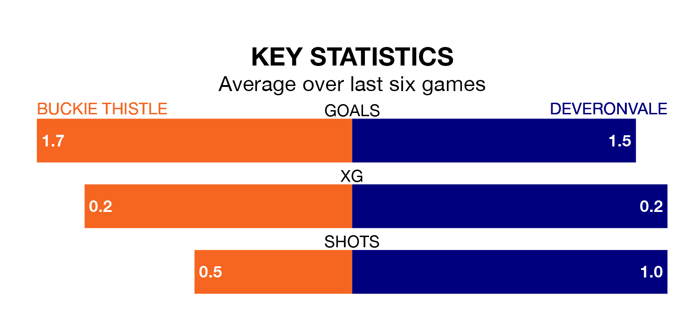

Buckie Thistle host Deveronvale in Saturday's match at Victoria Park looking to bounce back from defeat last time out in the Highland Football League.
Buckie Thistle, who sit third in the league after 30 games, fell to a 0-2 home defeat to Brora Rangers on Wednesday.
They face a Deveronvale side who picked up a win in their last match, a 2-1 victory against Inverurie Loco Works, and who sit 15th in the table.
With 78 goals in 30 games so far this season, Buckie Thistle are scoring more than average in the league with 2.6 goals per game. And they are conceding fewer than average, letting in 32 goals at a rate of 1.1 per game.
Deveronvale, meanwhile, are below average scorers, with 1.3 goals per game, compared to a league average of 1.8. They have conceded 2.5 goals per game.
In the last 10 years, Buckie Thistle and Deveronvale have played each other on 13 occasions. Buckie Thistle won seven of them, Deveronvale two, and they drew four times.
On average, Buckie Thistle scored 2.5 goals and Deveronvale 1.0 in those matches.
Their last meeting was on March 30, when they played out a 0-0 draw.
The hosts are in good form in the Highland Football League, with four wins and a draw from their last six games.
With a win and three draws over that period, the away team's form is much worse – they have taken six points from 18, compared to Buckie Thistle's 13.
Updated: 10:01 (UTC), 12/04/24